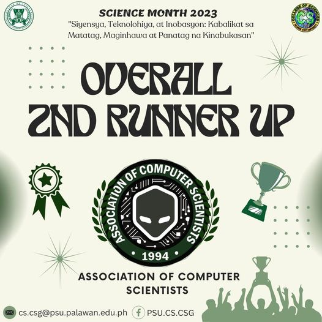

ORG SHIRT DESIGN:
#1 Erroll Jayke P. Montalvo from BSCS2-Block 2
HOODIE DESIGN : ENTRY #10 Christian M. Ala from BSCS2-Block 1
would like to express our sincere congratulations to these talented individuals whose designs stood out for their originality, artistic expression, and reflection of our organization's values and mission. A special thank you to all participants for their remarkable submissions. Your dedication and artistic contributions have made this contest a truly inspiring event, and we appreciate your involvement. The winning designs will now move forward to production, and we can't wait to see them in action.
Stay tuned for more NEWS and UPDATES.
OCT 5 NEWS

𝑪𝑶𝑵𝑮𝑹𝑨𝑻𝑼𝑳𝑨𝑻𝑰𝑶𝑵𝑺 𝑬𝑽𝑬𝑹𝒀𝑶𝑵𝑬!
Again, we want to express our gratitude to everyone who participated in the event since without them, it would not have been a success.
In particular, we want to thank our 𝘼𝘾𝙎 𝙊𝙛𝙛𝙞𝙘𝙚𝙧𝙨 and 𝙀𝙫𝙚𝙣𝙩𝙨 𝘾𝙤𝙢𝙢𝙞𝙩𝙩𝙚𝙚 for their tremendous efforts to ensure the security and safety of the event.
Again, thank you to each and every one of you for your wonderful participation in Science Month. Your enthusiasm for science is very admirable, and we look forward to seeing what you will do in the field in the future.